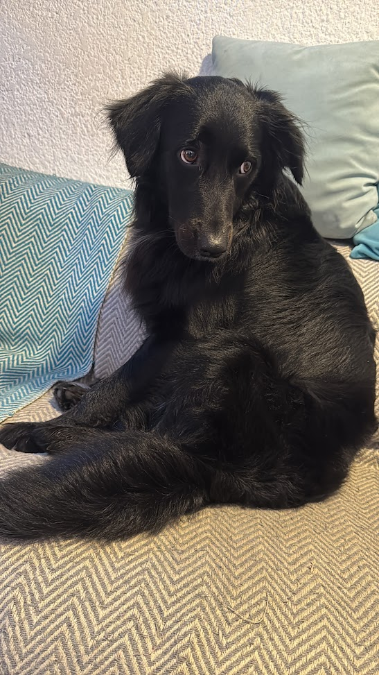
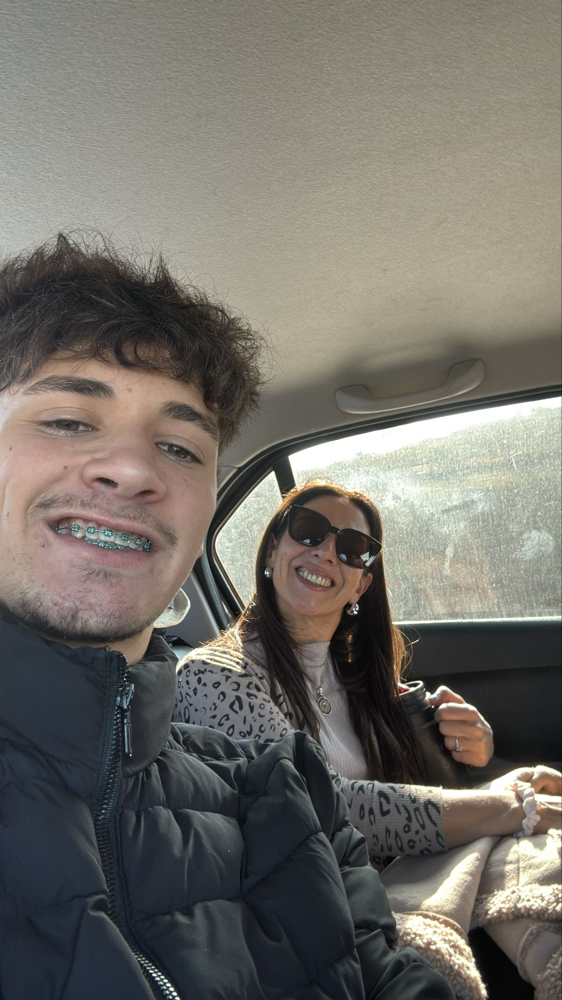
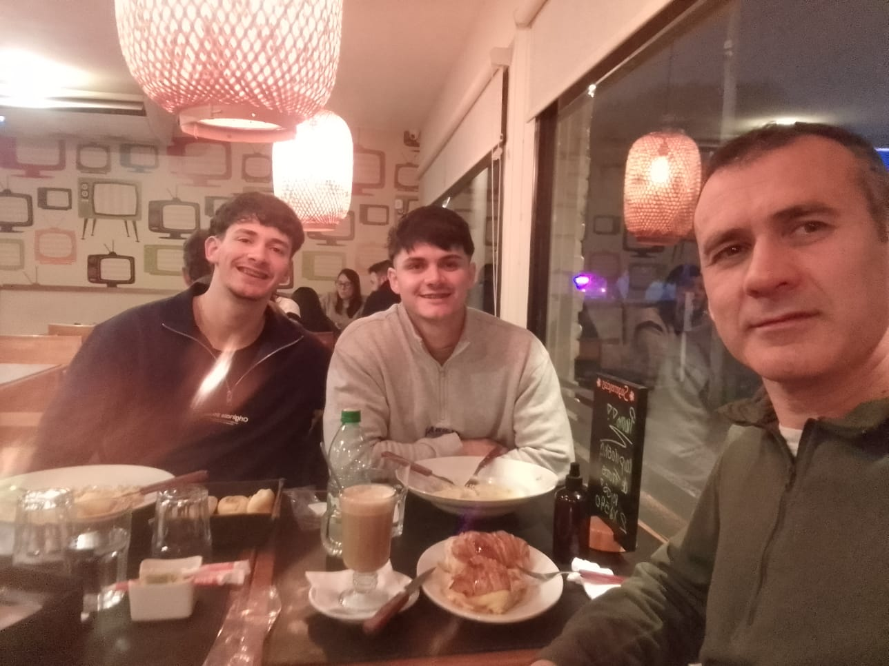
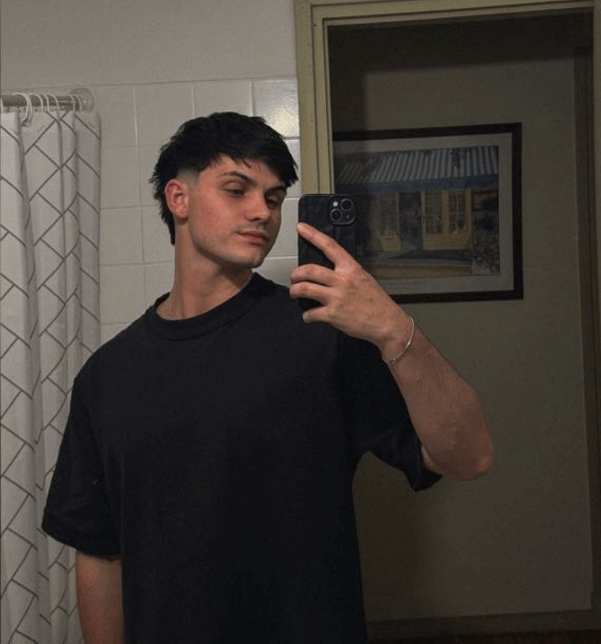

El es mi perro Ciro
Esta por cumplir 2 años
Él amigable y energético

Ella es mi madre Sandra
Tiene 54 años
es nurse enfermera
Me enseñó a ser responsable

Mi padre se llama Aldo
Tiene 51 años
trabaja en una oficina
Siempre da
buenos consejos

Mi hermano, Franco
Tiene 23 años.
Estudia en la FIC-UDELAR
A veces jugamos al fútbol